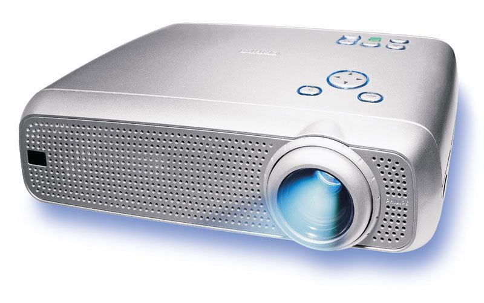

STUDY HUB STUDY HUB
STUDY HUB STUDY HUB
After computation is over the result must be supplied to the user. For this job the output unit is used. It converts the result in user readable form and sends it to some specific device. Such a devices which is used to communicate the processing results to user are known as output device. The most commonly output device is visual display unit and printer.
NOTE :- { For more detail about every output device click on it name or image like printer, monitor etc...}
 Output result are 2 types :-
1.Soft copy output (Which is present in digital form in a computer)
2.Hard copy output (Which are present in paper)
Some Output device are :-
Output result are 2 types :-
1.Soft copy output (Which is present in digital form in a computer)
2.Hard copy output (Which are present in paper)
Some Output device are :-
- Printer

Printer is widely used Output device. The printer give us hard copy of output (in digital form to medium such as paper) which are
show in monitor on digital form.- Speaker
A computer speaker is an output device that use in computer to generate sound. The sound waves produce by the computer speaker
help of computer's sound card. A speaker is Voice of our computer like our vocal code.
- Monitor
Monitor is most use output device the monitor show result in digital form (Soft copy)
A monitor is an output device that visually conveys text, graphics and video information on monitor exists electronically and is
displayed for a temporary period of time. For this reason information on monitor is also referred to as soft copy.
- Projectors 
A projector is output device that represent your presentation, video, image, graphics in onto some surface, like wall of class room
It use to display the content in large size compare than actual it uses light and lenses for magnified the content and show.
in projector we use soft copy as well as hard copy (or handwritten text/image) like OHP sheets
- Headphone

A Headphone is an output device that use in computer to generate sound same as speaker but in speaker sound listen everyone who
near the speaker and depend upon volume other hand the headphones sound listen by one person at a time.
Same as speaker in Headphones The sound waves produce by the computer sound card.
It reduces the Noise pollution.
Homepage